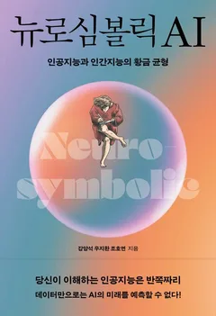
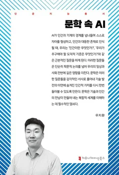
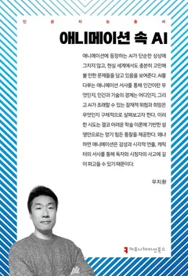
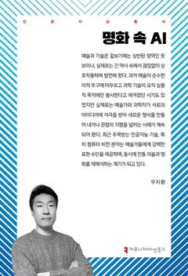
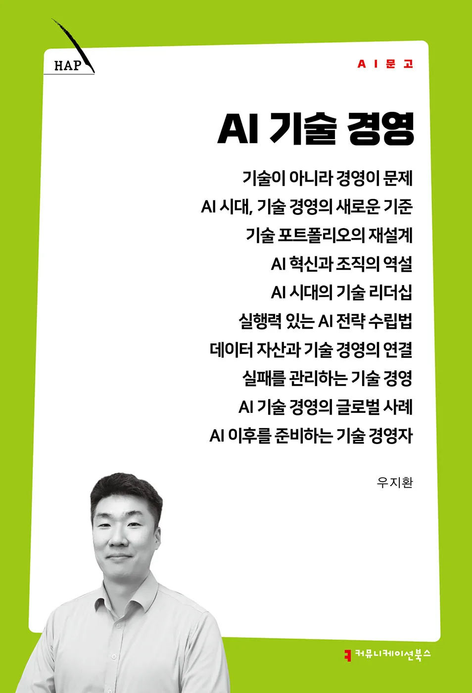

AGI Data Platforms — The Data War Behind the Model Race
Meta’s 4.3B Scale AI deal, the rise of Surge and Mercor, and the value chain shifting from labeling to expert data and RL environments.
2026Designing strategies that turn AI technology into business value
Ph.D · MBA · Author · AI R&D Leader · KAIST · Korea Univ. Adjunct Professor · AI Technical Advisor · AI Project Evaluator
AI Research & Engineering × Technology Strategy & Innovation × AI-driven Finance
Featured & Cited In
I work at the intersection of three disciplines: AI Research & Engineering rooted in computer vision at KAIST, Technology Strategy & Innovation with a Ph.D. from Korea University, and AI-driven Finance built on a KAIST MBA. Through the convergence of these three domains, I design and execute the process of turning technology into business value.
Adopting AI alone is not enough.
What problem to solve, why now, and how to embed it in the organization —
I find answers at the intersection of technology, strategy, and execution.
"We need to adopt AI, but don't know where to start."
I have designed and executed AI transformation across manufacturing, finance, retail, and logistics. I build actionable roadmaps that bridge the gap between technological potential and organizational reality.
"Is this technology really worth the investment?"
Drawing on research experience at CMU Robotics Institute and credentials as a certified technology broker and technology valuator, I assess the technical feasibility and business potential of AI/ML architectures for PE funds and M&A targets.
"We want an objective assessment of our technology assets."
With a Ph.D. in Management of Technology and a patent portfolio spanning 5 countries (30+ patents), I provide quantitative and qualitative valuation of technology assets.
"Our team needs to feel the impact of the AI era firsthand."
I have delivered keynotes and lectures at KOITA, Korea Chamber of Commerce, and KAIST for industry leaders and practitioners on AI trends and digital innovation strategy.
Inquire about speaking →"We need a credible report on industry trends."
I have authored industry white papers in retail, finance, and software sectors in collaboration with Korea Chamber of Commerce, Korea Data Agency, and Software Policy & Research Institute. 11 books and 36+ papers back my research capabilities.
Led Korea's first Trustworthy AI research at a Top 3 commercial bank. Developed XAI-based credit rating migration model; research paper ranked in top 5% on DBPIA.
As Head of AI Research at a major Korean retail/logistics conglomerate, planned and executed AI-driven Digital Transformation across retail, logistics, manufacturing, and media/entertainment.
Developed and deployed smartphone camera AI IP (CartoonShot) at a global electronics company. Smartwatch UX/UI proposal featured in Forbes as 'Next Display'.
Authored industry white papers for Korea Chamber of Commerce, Korea Data Agency, and Software Policy & Research Institute (retail, finance, SW sectors).
Technology valuation and Technical Due Diligence for PE funds and M&A targets. Advisory member of National Standards Agency's Industrial AI Standardization Forum.
Adjunct Professor at KAIST & Korea University (7 years) — AI Finance, Technology Management. Contributor to Dong-A Business Review (DBR) & KOITA.
Recent writings at the intersection of industry and technology.
Meta’s 4.3B Scale AI deal, the rise of Surge and Mercor, and the value chain shifting from labeling to expert data and RL environments.
2026Two-thirds of AI compute now goes to inference. The Cerebras IPO, token economics, and the tiered market competing for AI’s recurring revenue.
2026The Copilot–Cursor–Claude Code triopoly and the structural shift from autocomplete to agent-centric development.
2026Competitive assessment of Doosan, Rainbow, Neuromeka, and HD Hyundai — plus the structural forces of Chinese price pressure and the humanoid pivot.
2026As leverage shifts from menu-and-button super apps to AI agents acting on customer intent, financial groups face both the risk of becoming back-end suppliers and the opportunity to build a unified intelligent touchpoint. Deck in Korean.
2026Inside the largest open-weight model ever released — 2.8 trillion parameters — and the economics of “free models that cost money to run.”
2026Beyond RAG’s start-from-scratch retrieval: a knowledge-management paradigm where AI maintains its own wiki, with five practical use cases.
2026ChatGPT explains how to make coffee. Physical AI actually makes it. The technology poised to transform $50T in physical industries, explained simply.
2026OpenAI's 1M-line experiment, LangChain's 25-rank leap. The real key to AI agent performance is the harness, not the model.
2026How Google's KV cache compression works, and its ripple effects across the AI value chain — from semiconductors to on-device AI.
2026AI has left the screen and entered the physical world. NVIDIA Physical AI, Zoox robotaxi ride, and an expert's analysis of industrial implications.
2026Analyzing the emergence of a next-generation AI paradigm that goes beyond deep learning with logical reasoning and explainability, and its industrial implications.
2025How AI is transforming supply chain management, demand forecasting, and delivery optimization — with industry case studies.
2024The role of AI in enterprise digital transformation, with actionable strategies for execution and organizational embedding.
2023Depth in technology, breadth in strategy, pragmatism in finance — researching at the intersection of all three.
CS-based AI R&D
Research and industrial application of core AI technologies including computer vision, generative AI, LLMs, 3D point cloud, and HDR. From MPEG standardization at Samsung Research, visiting research at CMU Robotics Institute, to cloud-scale AI architecture design at AWS.
Management of Technology
Research on technology valuation, digital transformation, and open innovation strategy. Academically investigating the mechanisms by which technology converts to business value, and executing in industry.
AI-based Financial Research
FinTech innovation research including financial forecasting, credit scoring, and explainable AI frameworks using AI/ML. Connecting hands-on experience at Shinhan Bank AI Competency Center and Kakaobank to academic research.
With AI expertise, I know what can be built. With technology management, I understand why and how value is created. In the finance domain, I deliver real business impact. Currently at AWS, I accelerate AI innovation for partners and customers through the convergence of these three pillars.
Amazon Web Services (AWS)
APJ region AI/ML innovation. Scalable AI architecture design, partner enablement, and thought leadership.
CJ OliveNetworks
Led AI research lab. Planned and executed AI-driven DX across CJ Group's manufacturing, retail, logistics, and media/entertainment businesses. MLOps, Generative AI, LLM, smart factory analytics. Government R&D projects.
Kakaobank
Strategic investment process development. Emerging technology research (No/Low Code, Quantum Computing).
Shinhan Bank
Led Korea's first Trustworthy AI research in banking. Developed XAI-based credit rating migration model (top 5% on DBPIA). AI open innovation, startup Technical Due Diligence.
Samsung Electronics
Next-gen multimedia research (Super Resolution, 3D PCC, HDR, SLAM). Smartphone camera AI IP (CartoonShot) development. Smartwatch UX/UI — featured in Forbes as 'Samsung's Next Display'. Overseas R&D center management and open innovation.
Carnegie Mellon University
Computer Vision research (Video Segmentation). Technology startup scouting and evaluation.
KAIST College of Business
Deep Learning for Finance lectures and AI-based FinTech research.
Korea University Graduate School of M.O.T
AI-driven innovation strategy lectures. Venture company technology advisory.
Institute for Information & Communications Technology Planning & Evaluation (IITP)
Commercialization project evaluation
Korea Internet & Security Agency (KISA)
National IT Industry Promotion Agency (NIPA)
Korea Technology and Information Promotion Agency for SMEs (TIPA)
SME technology development support program
Korea Data Agency (KData)
Korean Standards Association
Korean delegate for ISO/TC20/SC16 — Unmanned Aerial Vehicle (UAV) international standardization
KOICA
Technical advisory for Dominican Republic startups — VR/AR, 3D Printing, Electrical circuit simulation
Digital Society Korea
Discourse on digital economy principles, ethics, and social order in the age of digital transformation





Selected papers shown. Full list on Google Scholar.
Delivering practical AI insights through talks bridging industry and academia.
Monthly AX June Seminar (IT Chosun) · 2026
Strategies for successful agentic AI adoption: why 40% of projects are projected to fail, four value domains, and scaling strategies — delivered to enterprise practitioners.
KOITA · Technology Management Practitioner Program
12th Distribution Industry Week · Korea Chamber of Commerce
KOITA · Digital Online Seminar · 2025
KAIST College of Business · 2024
KAIST · 2004–2009
KAIST · 2002–2004
KAIST · 1998–2002
Korea University · 2012–2019
A Study on Determinants of Technological Innovation Capacity and Technological Innovation Performance
📄 Dissertation (RISS)KAIST College of Business · 2020–2022
For writing commissions, speaking invitations, technical advisory, or research collaboration, please reach out.